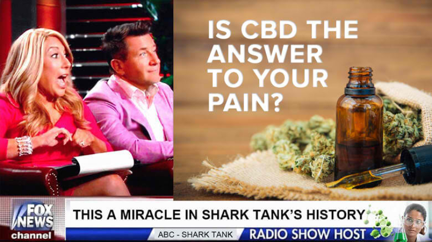
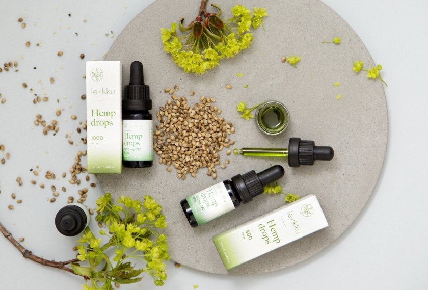

"Soffri di dolore cronico, insonnia o depressione?"
Questo olio può fermare il tuo dolore cronico, depressione, ansia, stress, fibromialgia, insonnia, artrite e dozzine di altri disturbi!
(Fox News), Venerdì 24 Gennaio 2020 – E’ stato l’episodio di Shark Tank più visto quando il Dr. Jamie Glbert ha vinto il panel di Shark Tank.
Mai prima d'ora la giuria aveva deciso all'unanimità di investire milioni di dollari in una nuovaazienda.
Dopo aver acquistato una quota sbalorditiva del 25% nella compagnia del dottore, il panel di Shark Tank ha guidato personalmente i due, aiutandoli a sottoporsi a re-branding e reimballaggio del loro prodotto miracoloso. Sponsorizzando scoperta come "il più grande passo avanti nella storia della salute", i giudici si sono affrettati a offrire i loro soldi guadagnati duramente per sostenere la coppia imprenditoriale. "Non sembrava vero. Il fatto che tutte queste persone di successo volessero essere una parte di ciò che stavamo facendo e disposte a investire i loro soldi, è stato molto emozionante!" ha spiegato il dottor Gilbert.
"E, cosa più importante, possiamo aiutare persone reali con problemi reali".
Il Dr. Gilbert, uno scienziato ricercatore della Northwestern, ha sviluppato la formula dopo che sua madre ha sviluppato un'artrite paralizzante. Sapeva che doveva esserci un'opzione migliore delle droghe pesanti che i suoi medici offrivano. Così si mise al lavoro, usando scienza e medicina a base vegetale che è stata usata per migliaia di anni. Ciò che ha funzionato è stato l'olio di CBD puro.
Dopo che i test preliminare su sua madre hanno mostrato un notevole miglioramento, ha arruolato i suoi
colleghi universitari per eseguire veri e propri test clinici. Quelle prove hanno dimostrato che la sua
formula aveva effetti di vasta portata, oltre alla gestione del dolore. Il dottor Gilbert sapeva di
dover portare la sua formula sul mercato per aiutare quante più persone possibile.
"Abbiamo lavorato duramente sulla strategia - il modo migliore per aiutare la maggior parte delle
persone. Capisco che le persone potrebbero essere scettiche nei confronti di un 'cosiddetto' farmaco
miracoloso - ma è per questo che abbiamo la scienza pronta a sostenerlo".
La coppia ha recentemente svelato il prodotto che ha fruttato loro milioni di dollari di investimenti.
"AceWelLness CBD Oil è il CBD di canapa nella sua forma più pura. Ed è stato clinicamente dimostrato che aiuta dozzine di disturbi, tra cui dolore cronico, artrite, stress, depressione, ansia, cuore sano, diabete e migliora la cognizione e ritarda l'insorgenza di condizioni orribili come la demenza e l'alzheimer. È davvero una rivoluzione medica".
Quando il Dottore ha lanciato il prodotto in vendita tramite il sito Web della società le scorte si sono esaurite in 5 minuti.
Il dottor Gilber è stato il primo concorrente nella storia di Shark Tank a ricevere offerte di investimento da tutti e cinque i panel!
Ci siamo anche assicurati di avere più prodotti di quanto pensavamo di poter vendere, ma tutto è andato esaurito in cinque minuti!" ha esclamato il dottor Gilbert.
Mentre gli investitori di Shark Tank brindano alla loro mossa intelligente, le persone in tutto il paese si stanno affrettando per acquistare l'olio di CBD AceWellness e dicono che i risultati cambiano la vita.
Studi clinici hanno scoperto che le persone che usano l'olio di CBD AceWellness sono state in grado di ridurre drasticamente il dolore e, con l'uso continuato, prevenire i sintomi associati a depressione, ansia, stress e diabete.
"AceWellness CBD Oil è una medicina rivoluzionaria", ha spiegato Barbara Corcoran di Shark Tank. "Ed è per questo che vogliamo farne parte. Questo prodotto, non è solo un modo per fare soldi, è qualcosa che ha il potenziale per cambiare la vita di milioni di americani".
Cassandra Healy, una nonna di 52 anni di Grand Rapids Michigan, è stata una delle prime utilizzatrici del Pure CBD Oil.
"Ero afflitta dai sintomi della fibromialgia. Non riuscivo ad alzarmi dal letto. Soffrivo costantemente. E le" cure " erano peggiori dei sintomi. Mi avevano fatto assumere farmaci chemio. Ero costretta a letto. La mia vita era finita. "
"Fino a quando non ho trovato l'olio di CBD AceWellness. 3 settimane dopo averlo iniziato a prendere, ho iniziato a notare una differenza. Il mio dolore si è drasticamente ridotto. Ho avuto di nuovo energia. Lo prendo da 4 mesi - e sono felice di non prendere nessun medicinale se non il CBD. Ha cambiato la mia vita in modo così drastico. Non sto esagerando nel dire che il CBD mi ha ridato la vita."
Come funziona?
A differenza del suo cugino cannabinoide, il tetraidrocannabinolo (THC) Il cannabidiolo (CBD) non produce un effetto psicoattivo. Questo perché il CBD non influenza gli stessi recettori del THC. Il corpo umano ha un sistema endocannabinoide che riceve i segnali di trasmissione dai cannabinoidi nel corpo.
Il CBD produce molti effetti benefici sul percorso molecolare umano. È un dato di fatto, ci sono più di 65 bersagli molecolari del CBD nel corpo. Un prodotto ricco di CBD con poco THC può trasmettere benefici terapeutici senza avere un effetto euforico o disforico.
Il corpo umano ha un sistema endocannabinoide (ECS) che riceve e traduce i segnali dai cannabinoidi. Produce alcuni cannabinoidi propri, chiamati endocannabinoidi. L'ECS aiuta a regolare funzioni come il sonno, le risposte del sistema immunitario e il dolore. Il CBD aumenta il tuo ECS, fornendo sollievo per il sonno, il dolore e altri benefici.
Smetti di sentirti giù, pigro, stanco e dolorante! Prova l'olio di CBD puro oggi!
Cosa può fare l'olio di CBD puro per te?
L'olio di CBD puro ha dimostrato di avere migliaia di benefici - per dozzine di disturbi - eccone solo alcuni!
Riduce il dolore legandosi ai recettori CB1 riducendo il gonfiore
Riduce il disagio cognitivo e l'ansia sociale nei pazienti con diagnosi di Disturbo d'Ansia Sociale Generalizzata (SAD).
Aiuta a combattere i disturbi neurodegenerativi come l'Alzheimer rimuovendo la placca che blocca la segnalazione dei neuroni
Riduce la dipendenza da sigarette modulando la ricompensa gli effetti della nicotina
Migliora la qualità del sonno e aiuta a eliminare l'acne inibendo la sintesi dei lipidi sulla pelle
Aiuta a regolare lo zucchero nel sangue
Fornisce sollievo a chi soffre di IBD (Crohn o colite) attraverso il suo effetto antinfiammatorio
Aiuta a migliorare i sintomi della SM (multiplo sclerosi) fornendo una protezione duratura ai neuroni Funziona per aiutare a eliminare il grasso.
Diversi studi di follow-up hanno dimostrato che l'utilizzo di CBD è associato a una circonferenza della vita più piccola
e molto, molto di più!
Ulteriori studi hanno incluso risultati promettenti con altre condizioni - Questi includono:
Cessazione del vizio del fumo e sospensione delle droghe
Trattamento di convulsioni ed epilessia
Trattamento dell'ansia
Riduzione di alcuni degli effetti della demenza come dimostrato dalla ricerca iniziale
Effetti antipsicotici sulle persone con schizofrenia
Applicazioni future nella lotta contro l'acne, tipo 1 diabete e cancro
PREPARATI A CAMBIARE LA TUA VITA!
Per un tempo limitato, puoi ottenere un prodotto proprio come quello presente su Shark Tank e offriamo ai nostri lettori uno sconto del 50% + spedizione GRATUITA!
Una volta effettuato l'ordine tramite il nostro link esclusivo, la bottiglia magica verrà quindi consegnata direttamente a casa tua e pronta per l'uso immediatamente.
Ricorda che è importante utilizzare quotidianamente l'olio di CBD Acewellness per ottenere il pieno sollievo.
Questa offerta non durerà a lungo, quindi assicurati di seguire il link sottostante per richiedere il tuo sconto del 50% + spedizione GRATUITA!
LEGGI I RISULTATI
“La fibromialgia mi ha tolto la vita per anni. Ora non più. Il Pure CBD Oil ha cambiat la mia vita. Nessun dolore cronico, niente più sensazione di stanchezza. Ho la mia vita indietro!”
Francesca S.
Roma
PRIMA E DOPO
“Ho avuto l’atrite reumatoide da quando avevo 28 anni. Mi ha letteralmente ucciso! I medici mi hanno fatto anche di peggio. Il CBD mi ha tolto il dolore, mi ha guarito l’infiammazione e senza effetti collaterali. Per quanto mi riguarda, è un miracolo.”
Sofia C.
Venezia
Offerta speciale

Scade presto. Prendi la tua bottiglia
PRIMA E DOPO

“L’ansia sociale mi ha fatto smettere di vivere. Non avevo amici, non avevo relazioni. Ma il CBD mi ha cambiata. Adesso posso parlare con la gente, e la mia psicologa mi ha detto di star raccomandando il CBD ai suoi pazienti dopo aver visto questi cambiamenti in me.”
Rossana Pavone
Firenze
”Sono un anziano, pensavo fosse arrivato il mio momento. Non ero più in grado di vivere. Mi ero arreso. Fino a quando mia figlia mi ha comprato il CBD. La mia vita è cambiata. Avevo meno dolori, più energia e potevo giocare a golf, con i miei nipoti, senza più dormire tutto il giorno niente più dolore”
Luigi Crippa
Napoli
"Uso il Pure CBD Oil da quando è uscito. Onestamente, non ho mai avuto aiuto migliore. Dolore – Sparito. Ansia – Sparita. Depressione – sparita. Ci sono voluti 6 mesi, ma alla fine ne è valsa la pena, la cosa migliore che abbia mai fatto per me stesso."
Giorgio Bruni
Milano
"Mi era stato diagnosticato l’Alzheimer circa 3 anni fa. Mi sentivo perso. Mia moglie mi ha comprato questo olio. Ho ancora l’alzheimer ma la progressione si è rallentata e i miei dottori vogliono studiarmi. Grazie Pure CBD Oil per avermi dato altri anni buoni."
Ernesto Franco
Palermo